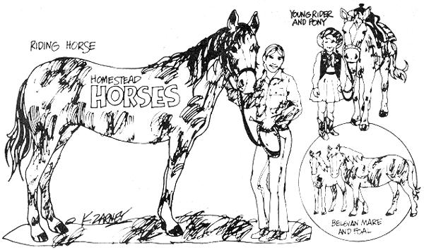

Beginning farmers usually do pretty well with gardens, chopping wood and building outhouses. . . but the birth of that first calf or litter of pigs generally sets 'em back a couple of notches. R.J. Holliday DVM, a veterinarian in Missouri and MOTHER contributor, intends to remedy the situation. His tool? A new handbook precisely designed to explain all the animal facts of life in language that new back-to-the-landers can understand.
MOTHER is serializing the manual as Dr. Holliday completes each chapter and here's installment No. 6:
GET A HORSE . . BUT READ THIS FIRST
Horses can be quite a useful addition to almost any homestead. Larger farms will find many uses for a good, big team of workhorses and the owners of smaller places may be able to make use of a light, dual-purpose horse or two for transportation and for light pulling. Even if your place is quite small, your children will no doubt delight in having a docile, pet pony to ride and care for.
These practical reasons for horse ownership are easy to understand and the partnership thus formed usually ends up in an arrangement that is satisfactory for both man and animal.
Sometimes, however, people own horses for psychological reasons. I've known individuals who have spent a lot of money on the animals simply because it was "the thing to do". This situation almost always ends in disappointment or disillusionment, since the horse becomes a "crutch" or substitute for a deeper psychological relationship. Nevertheless, there are some people who will keep a horse around just for the sake of companionship and to serve as a reminder that without our association with the animals over the millennia, out history and our civilization would be vastly different than it is today.
However romantic the idea of horse ownership is at the moment you read this, bear in mind that not everyone should have one of the animals: If you've an unrealistic view of the joys and the responsibilities of horse ownership, then you're almost bound to be disappointed and waste a lot of money. The time to really evaluate your needs in this area is BEFORE you buy!
You should also remember that you cannot force someone else to fall in love with horses. Several years ago I thought it would be nice if my oldest daughter would learn to ride a pony and, without consulting her wishes at all, I, bought her a small, spotted one complete with saddle and bridle.
The first ride was a complete fiasco. My daughter was scared, the pony panicked and ran away and my little girl fell off. To this day she still avoids the very mention of riding a horse.
If you have a youngster that you think might like to ride, then, be sure to provide an opportunity for him to gain the proper experience without any parental or peer-group pressure. Competitive coercion frequently forces children (and adults) into areas of endeavor that are not truly satisfying and this should be avoided at any cost.
When you've decided that you really do want a horse, your next step is to picture-in your mind's-eye-the "'ideal" animal. You'll want to consider several factors before you make your final decision. Some of the points will not apply to every situation, but we do need to look at each one in some depth.
Several years ago I was acquainted with a retired cowboy who had spent many years on the rodeo circuit. His knowledge of horses and people was phenomenal. One bit of wisdom that I gleaned from our many conversations is especially worthy of being passed on to you. "Stallions are only good for breedin' mares... mares are only good for havin' foals, and the only good workin-horse is a geldin."
I didn't agree with that old cowboy at the time, since it was then popular to own and ride stallions. Today, however after having owned a stallion for several years-I know he was right. The prestige of riding a spirited stallion in no way compensates for the many problems associated with its day-to-day care and management.
Stallions, just like other large domestic male animals, should never be trusted. They're too quick to take advantage of any sign of weakness, even on the part of an experienced handler. Women, especially, should be cautious around them, since stallions are very sensitive to the changes in body chemistry experienced by women in the various stages of the menstrual cycle.
When allowed to run with a band of mares, stallions are relatively, inattentive to their trainer and tend to resist any type of schooling. (I suppose they're too worried about their harem to really pay attention!) If they're penned away from other horses, they become unruly and often dangerously aggressive. Even seemingly gentle stallions turn cantankerous and unpredictable as they grow older.
Many folks claim that stallions have more stamina and endurance than mares or geldings, but an examination of the results of the longer trail rides seems to dispute this idea. Under conditions of maximum performance, the stallions are usually the first to give up, then the mares. The well conditioned geldings outstrip them all . . . not only in stamina and strength; but also in terms of the willingness to compete
Actually, I can think of absolutely no valid reason for a small, novice homesteader to own a stallion at all . . . unless it's only for the short period of time after purchase necessary for a veterinarian to perforce the castration operation.
A few stallions are needed, of course, to sire foals, and the, larger, stables can justify keeping them for this purpose and as a means of exhibiting the advantages of their particular bloodlines. If a stallion can be trained and shown at halter or In performance classes or in races, this enhances the value of his offspring.
In summary, we can say that stallions are psychologically "mare-oriented".
Mares are only a shade better than stallions as a regular mount. Even though temperamentally more docile, their usefulness is somewhat impaired by their femininity. . . they always seem to be either, pregnant, nursing a foal or in heat!
Most people are unwilling to subject a pregnant mare, to very hard or prolonged work, nor are they willing to put up with the troubles associated with having a foal tag along when the mare is being used. During their heat period, many mares become almost hysterical and unmanageable ... and, in any event, are not safe to ride in the presence of a stallion at this time.
Most mares also undergo some sort of character change during pregnancy (some become vicious and others more docile). The only obvious advantage to owning a mare is that replacement horses can be produced by the simple expediency of breeding her to the stallion of your choice.
Due to the nature of their sex, mares are either "stallion oriented" or "foal-oriented".
In contrast to stallions or mares, geldings are "people-oriented". Geldings are friendlier, easier to train and more attentive to their handler. This is not to say that castrated male horses do not exhibit a wide variation in individual temperament... but. at least, each one is consistent. Whatever a gelding's personality-good, bad or indifferent-it will be pretty much the same, week in and week out. Certainly, a gelding will not surprise you with a sudden shift in behavior due to any ebb or flow of sex hormones! I would strongly advise that your first horse be a gelding.
The size of your ideal horse will be dictated by his intended use and you should always pick a horse a little bit larger than needs to be to do his job. It should be obvious that a horse carrying only 15 percent of its body-weight will perform better than one carrying 25 to 30 percent of its body-weight. Most horses can carry tremendous loads for a short time, but to force them to do this for long periods results in damage to their ultimate productivity and well-being.
Children outgrow horses almost as fast as they outgrow clothes. The horse or pony that is just the right size for your youngster today is very apt to be much too small in a few months or a year. Better to buy one big enough to last a while if you expect to keep up with a growing child.
It would be easy to place undue emphasis on the age of your first horse since our admiration for "youth" in any form often causes us to pick a very young mount, sometimes with disastrous results.
The improved feeds and the intensive systems of management now used often produce horses that have reached their ultimate size and weight before they're 18 to 24 months old. Since they seem to be grown-up, such animals are frequently subjected to strenuous training and hard work before they reach maturity.
No matter how large he is, no horse is really adult and ready for extremely hard work until he's at least five years old. Before this age his bones are still relatively soft and-even though he can do hard work-he does so only at the expense of his future health and usefulness.
If a horse has been fed properly from birth, gently broken-out and trained as a two-or-three-year-old and then used for moderate tasks until he's four or five, there is really no reason to discriminate against him . . . even when he's 10 or 15 years old! If he's in good health and has no vices or bad habits, an older horse has the advantage of experience over a younger animal . . . which is especially desirable for an inexperienced rider. Very few combinations of man and animal can be as troublesome as a young, green rider mounted on a young, green horse.
There's an old saying that "There is no such thing as a bad color on a good horse" . . . and I would certainly recommend that you pretend to be colorblind when you pick yours. Do not let an animal's surface pigmentations blind you to obviously much more important defects in other areas.
The only time color should be a factor in the selection of a horse is if a certain pattern is necessary to satisfy the breed association requirements for a specific breed. Color really influences the usefulness of a horse only if the animal's hooves are light colored. White or light-colored hooves tend to wear faster than dark-colored ones and are somewhat more prone to cracking and chipping.
By now you probably have a pretty complete picture in your mind of the horse you're looking for. If a specific breed satisfies all of your other requirements . . . by all means, buy an animal of that breed. As a general rule, you can expect to pay more for a registered animal but the fact that you have a complete record of the horse's pedigree, or ancestry, only increases the pride of ownership and the value of the animal-and any potential offspring-in question.
It's interesting to note that there can be more variation between animals of the same breed than there is between horses of different breeds. So don't worry too much about an animal's pedigree . . . a good horse is a good horse whether he has papers or not.
Before you rush out to purchase any equine "bargain", you should always remind yourself that the word "horse-trader" did not come to mean what it does strictly by chance. The majority of people who buy and sell these animals are honest . . . but some are not! Strict attention to the following observations may help you to avoid buying a horse that is not everything you expected him to be.
If at all possible, try to purchase your first horse from an individual. In this situation, you can usually make an inspection of the home farm which, alone, will give you background knowledge about the management and feeding practices which your new pride and joy is accustomed. Most reputable dealers will usually let you try out the horse for a few days, and some may even offer some sort of health or sounds! guarantee. If the seller is hesitant to do these things I'd look elsewhere!
A livestock auction is usually not a suitable place for a beginner to purchase a horse. In my part of the county) least, auction barns are favorite gathering places for the dealers who have an inferior product to sell. Beware!! The only exception to this restriction on buying at auction would be a production sale held by a reputable breeder.
No matter where you look for a horse, try to take along a friend who's experienced with the animals and their traders. Having an advisor that you can trust will help to steer away from many poor buys.
When your search is narrowed down to one horse, you should handle him enough so that you can tell if his personality is suited to your purposes. Careful attention should be given to his actions around people and other horses.
Does he act frightened or lay back his ears, try to bite or kick when you approach? Is he easy to catch in the pasture? Is he calm during saddling and when being loaded into a trailer? Does he stand quietly when tied or is he a "halter-puller"? Does he show either fear or aggressive tendencies toward other horses?
Any one of these habits may seem to be minor by itself, but they're all vices and potentially dangerous. These bad habits are almost impossible to train out of a mature horse so, if possible, avoid them. It's much easier to get a properly disciplined horse right at the start.
Buying a horse is not quite like buying any other farm animals. Cows, sheep and hogs are generally considered to be healthy and sound if they have no infectious diseases and seem to be capable of the production common to their species. Freedom from infectious disease is naturally important in horses too . . . but we also have to view the choice of a riding or work animal in the same light we would use to pick an athlete. With a horse we are more interested in his ability to perform than we are in any ability to fatten easily.
Before a purchase is made you should take great pains to see that the horse is healthy and sound. Do not hesitate to have your veterinarian give the animal a thorough examination This exam should include taking the horse's temperature, listening to its heart and lungs both before and after exercise, checking the eyes for blindness and actually feeling the joints, tendons and hooves for any abnormalities. A fecal exam for internal parasites and a blood test for EIA (Equine Infectious Anemia) should also be conducted.
This is a good time, too, to have your vet check to see that the horse has not been tranquilized or had any minor surgery done to cover up any defects or blemishes. The money and time spent on such an examination is an excellent form of insurance.
All of the above factors are worthy of serious consideration before you buy a horse, but the most important factor of all is your own personal preference. If one certain horse catches your eye and he seems to measure up to most of your ideals . . . buy him! An English horseman of note, George Whyte-Melville, summarized this advice nicely way back 1875 when he wrote, "In the choice of a horse and a wife, a man must please himself, ignoring the opinion and advice friends."
Nextinstallment:"How to tellthe age of farmanimals bytheir teeth."
|
 |
|
|